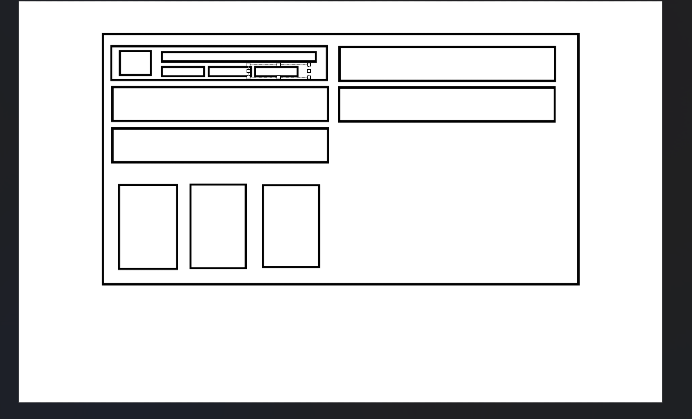
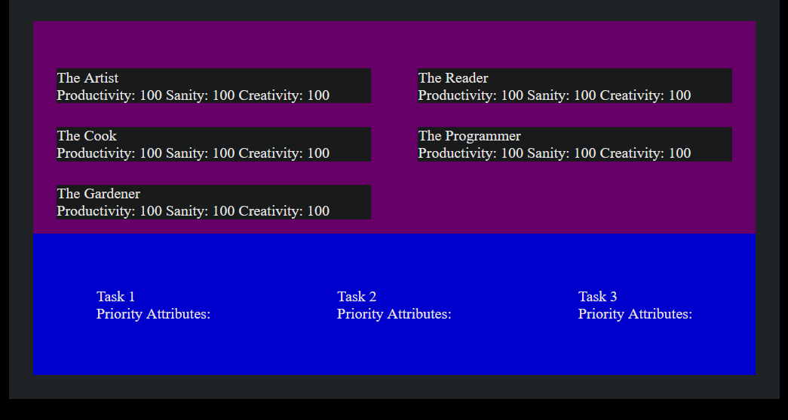
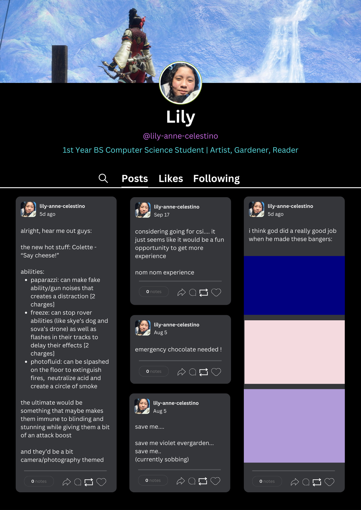
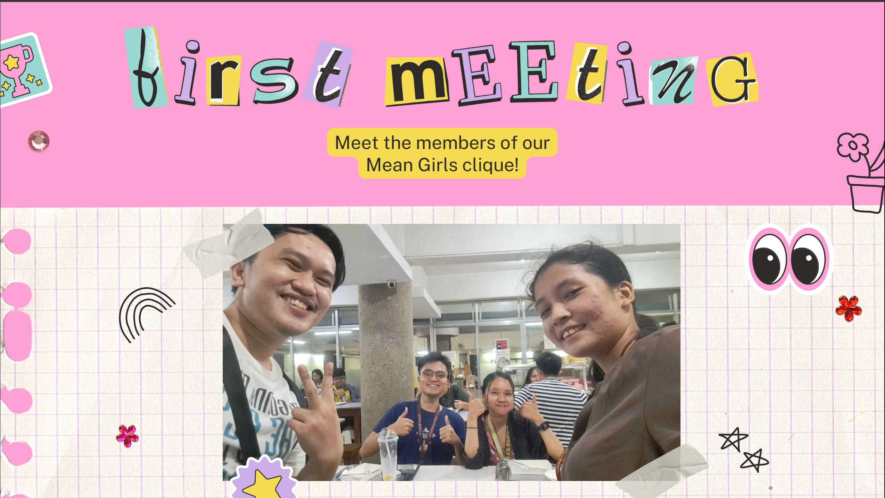
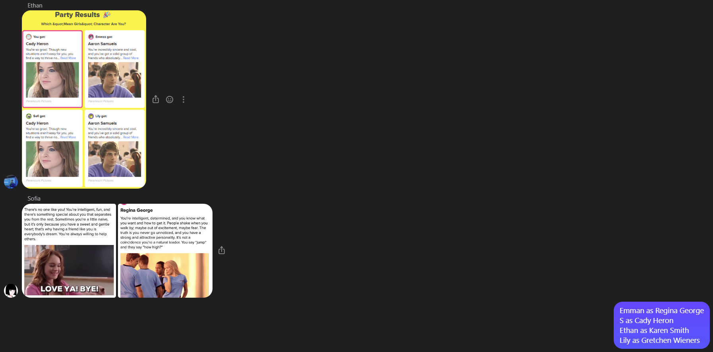
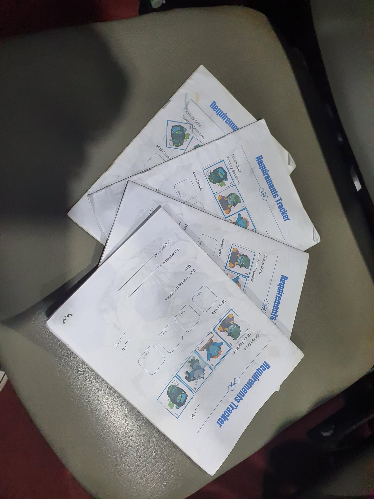

When I first saw the introduction mini-tasks I wanted to make a website that could make a pretty good summary of myself. I wanted it to be similiar to a project I did when I was younger, which was also and introduction website. I also wanted it to be more interesting though, so I thought of making a webgame. However, procrastination is indeed a cruel mistress, and I ended up only having 2 days to work on it. At first, I still wanted to do sort of a game, so I was working through the logistics of it.
 
Luckily, one of my friends talked me out of it. He was a very wise man who knew all too well about the pain of making your scope too big. So, I decided to just make a poster.
I was on a time limit, with only two hours left, so I thought to myself, what's an easy poster to make that would still tell them enough about me? I settled on replicating a tumblr profile.
As you can see, it's not exactly super accurate. I couldn't be super meticulous with the details as I would have liked, but the energy is still there. I like to think that I did a good job with it.
I really appreciated my Nibble during this application process. A blockmate and I decided to join together since we knew each other from being grouped together during the DCS Bootcamp earlier that year. We looked for a suitable upper year pair to go with us, and we actually looked for one of our ates during that bootcamp. They were already taken though, so we looked for a pair that would align with our interests. So, we found Kuya Ethan and Ate S.
When we were going to meet them for the first time, I was honestly super nervous. My Nibblemate and I were both freshman, while they were both fifth-years. There was a clear experience gap between us, but luckily, they were really nice and understanding. I sort of interrogated them that first day about CS in UPD, and we barely talked about our mini-tasks. The food was good though.
We eventually met online to actually complete our mini-tasks, where we played some personality games to try to figure out which Mean Girl we were. We honestly probably misunderstood the instructions, but who cares? We were having fun.
Emman and I ended up cramming the output together. We found a good template and set to work, using the one picture that we took during our first meeting with them. It was a lot of work, copy-pasting all of the letters all the time. I still really enjoyed it though, I don't usually work in that style.
I was pretty excited for the DTP. After all, the reason I wanted to apply in the first place was to gain experience. A training program was already one step closer to my goal.
Yeah I crammed a lot of the outputs, but to be honest, I just wanted to make a website myself. I lost interest for a while when we were simply just answering GForms, but when we started actually applying the Javascript we were learning, I had a lot of fun.
The SigSheet was sort of stressful to me. I don't really like seeking people out, especially if I don't know where to look for them. I simply attended the tambay sessions whenever I could, not only to get the stickers for the SigSheet, but also to try to maybe catch more people. I think I didn't try hard enough though, and I also think it was a big blow that I wasn't able to attend one of the major events due to a scheduling conflict with one of my GEs. I might've been able to get a lot more signatures from there if I had attended.
Still though, being able to meet the other applicants and ask about the various aspects of both UP and CSI life from the mems was a very valuable information source for me.
For internship, I was really excited about it, but I ended up pushing it back really far because I have lots of doubts with myself. All in all though, I think I had fun studying how to make a website like CSI does and learning a little bit more about svelte.